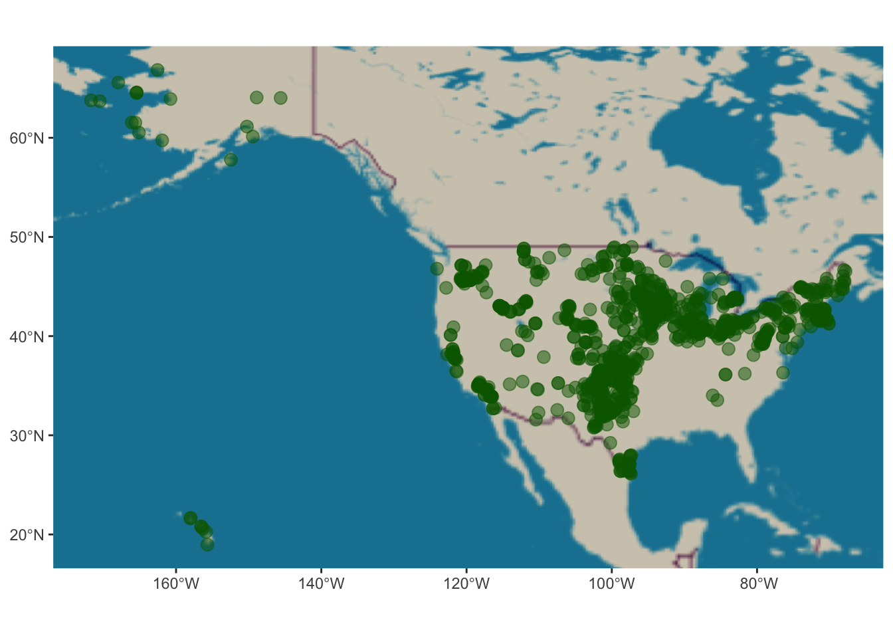
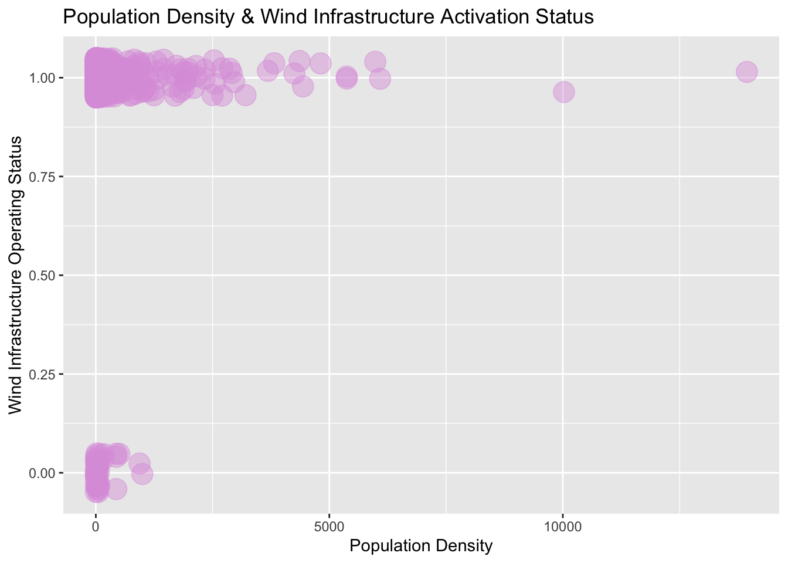
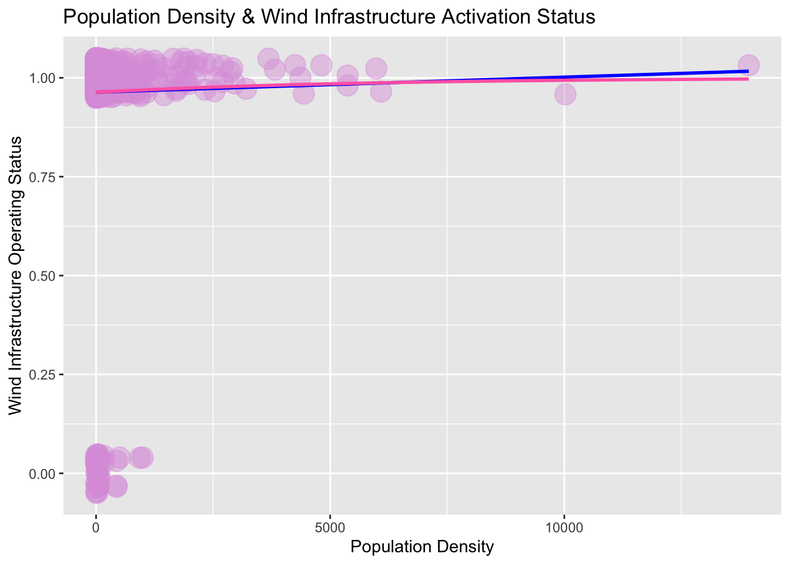

# Loading Libraries
library(tidyverse)
library(sf)
library(cowplot)
library(spData)
library(raster)
library(ggspatial)
library(prettymapr)
library(ggmap)
library(naniar)
library(gt)
library(tmap)
library(terra)
library(patchwork)
library(broom)
library(stars)
library(devtools)
library(maptiles)
library(smoothr) Spatially Distorted Signaling:
How Opinions Against Wind Infrastructure Delay Our Transition to Renewable Energy
The phenomenon of Spatial Distorted Signalling (SDS) describes the mobilization of minority opinion holders to push back electorally. Leah Stokes (et.al) has explored the SDS phenomenon as a natural experiment in her piece, Electoral Backlash against Climate Policy: A Natural Experiment on Retrospective Voting and Local Resistance to Public Policy (2016). The findings in this paper describe that rural Canadian communities had a greater ability to mobilize and organize political pushback against majority chair holders in parliament after the passing of legislation that incentivized the development of wind infrastructure.
Since then, Leah has navigated the nuances of varying percentiles in races, political affiliation (particularly the % precinct gop voting share), the scale and size of the project, as well as, the volume of local mobilization in her research, Replication Data for: Prevalence and predictors of wind energy opposition in North America (2023).
I am hoping to reproduce these naturally observed outcomes with the US Wind Data and assess the relationship of population density and the project status of wind plants. Analysis of these relationships could provide insight into understanding the scaling effect that local resistance has on spatially distorted signalling in relation to wind infrastructure projects and and sustainable climate policy.
The data source that was utilized in this project, US Wind Data, focuses on the public stance on wind infrastructure for census tract regions within a 3 km buffer zone of a wind plant. It contains categorical variables, binary variables, continuous socioeconomic factors such as % of races, % precinct political gop affiliated voting share, mobilization tactics, and more. Data is associated with the Replication Data for: Prevalence and predictors of wind energy opposition in North America, doi Harvard Dataverse, V1, 2023. The collaborators on that project include: Stokes, Leah; Franzblau, Emma; Lovering, Jessica R.; Miljanich, Chris. Leah Stokes and her awesome team gathered all of this information from American Wind Association (awea), operational, Columbia Sabin Center (columbia).
Main Takeaways:
Intuitively as expected, a single unit increase in population density is associated with a minor increase in the odds ratio of a wind plant operating. Our models also described that for each single unit increase in median income, there is a decrease in the odds ratio that a wind plant is operational. Similarly, this is seen with anti wind infrastructure opinion holders.
Although our p-values each of our models provided p-values for our coefficients that are hold because they are above the significance level of 0.05. We cannot make any definitive assumptions about our logistic regression models because there is insufficient evidence inspecting the influential effects of omitted variables bias and a lack of data for regions with non-operational wind plants.
If given the opportunity, I would expand the dataset to include any more possible non-operational wind plants and explore in greater detail how exogenous our variables are and determine which values are likely interacting, to produce the best model fit.
Loading Libraries
The following libraries were selected based on their functionality and ability to optimize our data for mapping.
Read in the Data
U.S. Wind Data
# reading in & storing data
wind_data <- read.csv("../data/wind_data_usa.csv") Initial Visualization of the Data
Below we can see the spatial scope of our data being considered. Each bubble represents a wind power project within the United States from 2010-2016.
# First visual of the U.S. wind data provided by the geometry points
wind_plants <- ggplot(wind_sf) +
annotation_map_tile(type = "osm") +
geom_sf(col = 'darkgreen',
alpha = 0.5,
size = 3)
wind_plants
Linear Regression Models
Variables of Interest:
These variables focus more on regionally dependent factors that intuitively seem to have an impact on mobilization variables we don’t have time to cover in this project. We’ll be working with a mix of discrete and continuous data, so there some wrangling will be necessary to run the regressions we’re interested in.
| Name | Description |
|---|---|
| status | Describes the project operating status. In this study, we have converted it into a binary variable: 1 is operating, 0 is not_operating. |
| pop_den | Tract-level 2010 census data for population density (per mi^2) |
| med_inc | Tract-level 2010 census data for median income |
| is_anti_wind | Binary measure of wind opposition |
Determining Variable Assignments for OLS
unique(wind_sf$status) # displays unique values in this[1] "Operating" "Cancelled"
[3] "Out of service (temporarily)" "Standby"
[5] "Decommissioned" "Operating | Decommissioned"
[7] NA Redefining status as a Binary Variable
# creating two categories: operating & not_operating
# We are removing 'Operating | Decommissioned' because it skews the data
unwanted_status <- "Operating | Decommissioned"
replacement_status <- "Uncertain Status"
wind_sf$status[wind_sf$status== unwanted_status]<-"Uncertain Status"
# were we successful ?
#unique(wind_sf$status) # displays unique values in this
# cleaning out NAs for OLS
wind_sf <- wind_sf %>%
filter(is.na(status) == 'FALSE') %>%
filter(is.na(is_anti_wind) == 'FALSE') %>%
filter(is.na(pop_den) == 'FALSE') %>%
filter(is.na(med_inc) == 'FALSE') %>%
filter(is.na(median_age) == 'FALSE') %>%
filter(is.na(n_turbs) == 'FALSE')
# were we successful ?
#unique(wind_sf$status) # displays unique values in this
# if_else preserves the data type but replaces unwanted values
wind_us <- wind_sf %>%
mutate(status = if_else(
status %in% c('Cancelled', 'Out of service (temporarily)', 'Standby', 'Decommissioned', 'Uncertain Status'), 'not_operating',
'operating')
)
# are our only outputs "operating" and "not_operating"?
#print(unique(wind_us$status))
# status as factor and reassigned values
wind_us <- wind_us %>%
mutate(status = case_when(status == "operating" ~ 1,
status == "not_operating" ~ 0))
# are our only outputs 0 or 1?
print(unique(wind_us$status))[1] 1 0Binary variable will be status variable: opertating is 1, and not_operating will be 0.
Dude, that’s Logit!
Our model below is describing the linear regression for the effect of population density on wind project operating status. This is really a formality to demonstrate why OLS is not the correct approach for interpreting our relationships of interest.
Visualizing OLS of Categorical Response Variable
Our initial visualization demonstrates a correlation between smaller population density and wind infrastructure plants operating. This is likely associated with weight placed on voters in regions with smaller demographics. Local mobilization of minority opinion holders in these regions have a greater availability to push back against policymakers. However, this visual does not encapsulate all of the necessary information required to determine this with full certainty. Our data set has poor availability for non-operating infrastructure, these are being treated as outliers.

Min. 1st Qu. Median Mean 3rd Qu. Max.
0.143 4.309 12.493 181.484 40.394 13940.515 Logistic Regressions with Binomial Family
Our model below is describing the linear & logistic regressions for the effect of population density on wind project operating status. This visual is very interesting and definitely explains why the \(R^2\) value is only giving values in the 0.9 range. Since our data contains a significant number of operating wind plants for a wide range of population densities, the regression model is producing a fit according to the operating status. The values in the not_opertating status appear to be considered similar to that of an outlier.

Binary Dependent Variable
\[\text{status} = \beta_0 + \beta_1 \text{pop_den}\_i + \varepsilon_i\]
Our summary table describes a null deviance
362.60.(1178 df) and residual deviance362.22(1177 df).A p-value of
0.593for \(\beta_1\), is greater than the significant value of 0.05, therefore, the model hypothesis that operation status is influenced by population density holds.However, I am still not convinced there isn’t a correlation shared with another factor, so let’s explore how our numbers change as we incorporate more variables into our equation later on.
Call:
glm(formula = status ~ pop_den, family = "binomial", data = wind_us)
Coefficients:
Estimate Std. Error z value Pr(>|z|)
(Intercept) 3.2721930 0.1623175 20.159 <2e-16 ***
pop_den 0.0001793 0.0003356 0.534 0.593
---
Signif. codes: 0 '***' 0.001 '**' 0.01 '*' 0.05 '.' 0.1 ' ' 1
(Dispersion parameter for binomial family taken to be 1)
Null deviance: 362.60 on 1178 degrees of freedom
Residual deviance: 362.22 on 1177 degrees of freedom
AIC: 366.22
Number of Fisher Scoring iterations: 6What in the Log Odds?
So far, we haven’t been able to gather very much useful information to describe our model predictions. Since we’re working with a binomial family, the p-values produced in the glm() need to be further extrapolated before they may be used to interpret our model.
Our model that we just fit tells us that:
\[logit(p)=log( p / 1−p)=β0+β1x+ε\]
so then, to solve for p:
\[p̂=e^(β0+β1x1+eβ0+β1x)\]
Alternatively, we’re going to solve for p using \(R^2\) because that looks gross. The uniroot function searches over the provided interval to find the zero value of the function provided. We pass the expression that should equal zero, and it finds us the p that ensures it equals zero.
Finding p
Utilizing the funky relationship described above, we can solve for a range of p values using \(R^2\). We’re curious about the probability of operating wind plants for Population Density at 20,000, 6,000, and 600.
[1] 0.9989509[1] 0.9872347[1] 0.967067Manually computing the probability for different outcomes is tedious and inefficient. To improve this, we can make a table containing the odds ratio of how often a binary event occurs.
Interpreting Coefficients Using Odds Ratio
To better interpret this relationship, we are going to change the scale of the variable on the y-axis. Now, we will be considering the odds, rather than the probability. While these two concepts are often conflated, they are not the same[2]. They are however, related by the simple formula below.
The odds of a binary event are the ratio of how often it happens, to how often it doesn’t happen.
\(odds(p̂)=p̂1−p̂=exp(β̂0+β̂1⋅x)\)
We’re going create an odds_hat variable for predicted odds. The ratio of the odds after a single unit increase in x to the odds before that one unit change is equal to eβ1. Notice this doesn’t depend on x anymore! Therefore, it’s a useful interpretation of coefficients.
status_popden_predicted_odds <- status %>%
augment(type.predict = "response") %>%
mutate(y_hat = .fitted) %>%
mutate(odds_hat = y_hat / (1 - y_hat)) %>%
gt()This is an “odds ratio”, meaning we care about how this number differs from 1. If it’s greater than 1, then the odds increase when x increases. Conversely, if it’s less than 1, then the odds decrease.
- By how much does our model predict that the odds of
operating statuswill change with each additional unit increase in population density?
exp(status1$coefficients[2,'Estimate'])[1] 1.000179Answer: Our model estimates that one unit increase in population density is associated with a change in the odds ratio of \(e^(0.0001793) =1.000179\), or a 1.79e-04% increase in the odds of wind plant having an operating status.
Logistic Model with 2 Continuous Variables
\[\text{status}\ = \beta_0 + \beta_1 \text{pop_den}\_i + \beta_2 \text{med_inc} + \varepsilon_i\]
Our summary table describes a null deviance 362.60.(1178 df) and residual deviance 359.84 (1176 df).
Additionally, it provides a p-value of 0.511 for \(\beta_1\), indicating that the hypothesis here is accepted because it is greater than the significant value of 0.05.
The p-value of \(\beta_2\), 0.957 is acceptable because it is above range of the significant value.
Call:
glm(formula = status ~ pop_den + med_inc, family = "binomial",
data = wind_us)
Coefficients:
Estimate Std. Error z value Pr(>|z|)
(Intercept) 4.028e+00 4.950e-01 8.138 4.03e-16 ***
pop_den 2.477e-04 3.776e-04 0.656 0.5118
med_inc -1.497e-05 8.988e-06 -1.666 0.0957 .
---
Signif. codes: 0 '***' 0.001 '**' 0.01 '*' 0.05 '.' 0.1 ' ' 1
(Dispersion parameter for binomial family taken to be 1)
Null deviance: 362.60 on 1178 degrees of freedom
Residual deviance: 359.84 on 1176 degrees of freedom
AIC: 365.84
Number of Fisher Scoring iterations: 6Interpreting Coefficients using Odds Ratio
It’s important to remember that we still need to exponentiate our estimated values in order to obtain our p-values. We’re here to break the status quo of OLS and train our brains to interpret logistic regressions using the Odds Ratio.
By including the median income variable in our model and exponentiating the coefficients, we see a huge effect. Areas with an increase in population density observed an increase in their odds of having active wind infrastructure by a factor of 2.48e-04% when controlling the median income. However, the odds of operating status decrease by 1.5e-05 for each average unit increase in median income.
\[logit(p)=log( p / 1−p)=β0+β1x+ε\]
# beta1 estimation exponentiated
exp(status2$coefficients[2,'Estimate'])[1] 1.000248# beta2 estimation exponentiated
1 - exp(status2$coefficients[3,'Estimate'])[1] 1.497159e-05Probabilistic Predictions
We are going to making some probability predictions using out-of-sample predictions using the type.predict argument set as “response”, to retrieve fitted values on the familiar probability scale.
# probability scale
probability_predictions <- augment(status_2, type.predict = "response") %>%
gt()For example, our model predicts the odds that an area with a population density of 124 and a median income of 46,094 and would have an operating wind plant is ~97%.
exploring_model <- data.frame(pop_den = 124, med_inc = 46094)
augment(status_2, newdata = exploring_model, type.predict = "response") %>%
gt()| pop_den | med_inc | .fitted |
|---|---|---|
| 124 | 46094 | 0.9667131 |
Binary Predictions
Model Containing Binary Independent Variable
\[\text{status}\ = \beta_0 + \beta_1 \text{pop_den}\_i + + \beta_2 \text{is_anti_wind} + \varepsilon_i\]
Our summary table describes a null deviance 362.60.(1178 df) and residual deviance 289.8 (1175 df).
Additionally, it provides a p-value of 0.819 for \(\beta_1\), indicating that the hypothesis here is accepted because it is drastically smaller than the significant value of 0.05.
The p-value of \(\beta_2\), 0.668 is acceptable because it is within range of the significant value.
Call:
glm(formula = status ~ pop_den + is_anti_wind, family = "binomial",
data = wind_us)
Coefficients:
Estimate Std. Error z value Pr(>|z|)
(Intercept) 4.467e+00 3.076e-01 14.524 < 2e-16 ***
pop_den 7.565e-05 3.304e-04 0.229 0.819
is_anti_wind -2.798e+00 3.612e-01 -7.746 9.47e-15 ***
---
Signif. codes: 0 '***' 0.001 '**' 0.01 '*' 0.05 '.' 0.1 ' ' 1
(Dispersion parameter for binomial family taken to be 1)
Null deviance: 362.60 on 1178 degrees of freedom
Residual deviance: 292.13 on 1176 degrees of freedom
AIC: 298.13
Number of Fisher Scoring iterations: 7Interpreting Coefficients using Odds Ratio
So, after some manipulation, we find that the odds ratio gives us some good information.
- Areas with an increase in population density observed an increase in their odds of having active wind infrastructure by a factor of 7.6e-05% when controlling the local opinion on wind constant. However, the odds of operating status decrease by ~7% for areas that identify as anti wind infrastructure.
# beta1 estimation exponentiated
exp(status3$coefficients[2,'Estimate'])[1] 1.000076# beta2 estimation exponentiated
1 - exp(status3$coefficients[3,'Estimate'])[1] 0.9390681Table of Binary Predictions
What do these predictions tell us?
Well, they lend us some insight into whether or not we can definitively predict the status outcome of a region depending on their population density and position on wind opposition. They additionally provide the model fit (\(R^2\)) value associated with the predicted value.
status_binary <- augment(status_3, type.predict = "response") %>%
mutate(operating_hat = round(.fitted))
binary_predictions <- status_binary %>%
dplyr::select(status, pop_den, is_anti_wind, .fitted, operating_hat) %>%
gt()Results Summary
Intuitively as expected, a single unit increase in population density is associated with a minor increase in the odds ratio of a wind plant operating. Our models also described that for each single unit increase in median income, there is a decrease in the odds ratio that a wind plant is operational. Similarly, this is seen with anti wind infrastructure opinion holders.
Although our p-values each of our models provided p-values for our coefficients that are hold because they are above the significance level of 0.05. We cannot make any definitive assumptions about our logistic regression models because there is insufficient evidence inspecting the influential effects of omitted variables bias and a lack of data for regions with non-operational wind plants.
If given the opportunity, I would expand the dataset to include any more possible non-operational wind plants and explore in greater detail how exogenous our variables are and determine which values are likely interacting, to produce the best model fit.
Considering Omitted Variable Bias (OVB)
Neglecting additional variables without testing is bad practice. Exogeneity is a very difficult OLS assumption to uphold – alongside a normal distribution of the error mean. A means to determine relationships between variables is running various linear regression models and comparing the \(R^2\) value. In this project, we focused our attention on the why OLS was not the analysis method of choice for our relationships of interest. In the instance of logistic regression, a log odds ratio must be taken to interpret each individual variable. There is a strong possibility that the models utilized in this project are not exogenous and require deeper analysis to determine the impact of underlining influences.